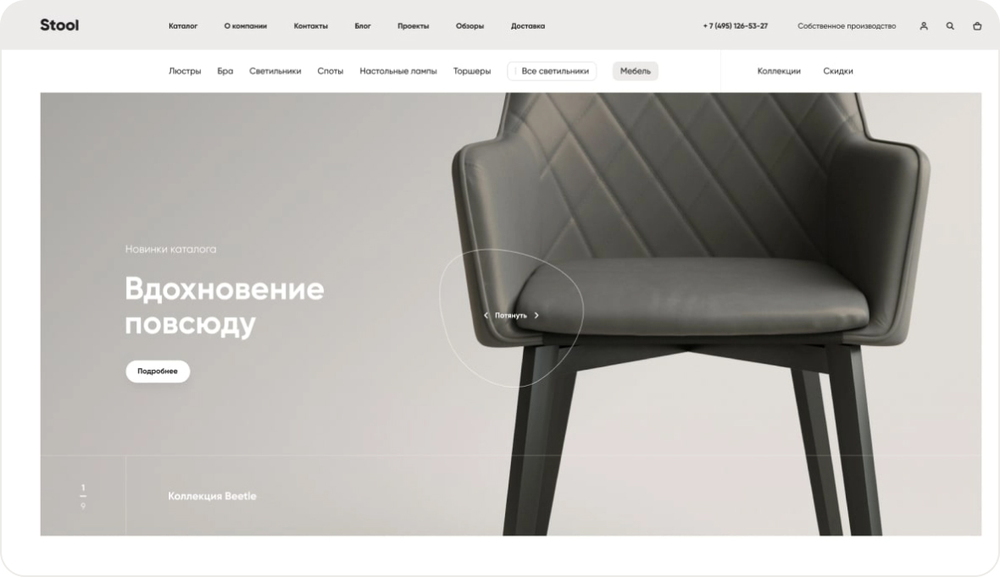
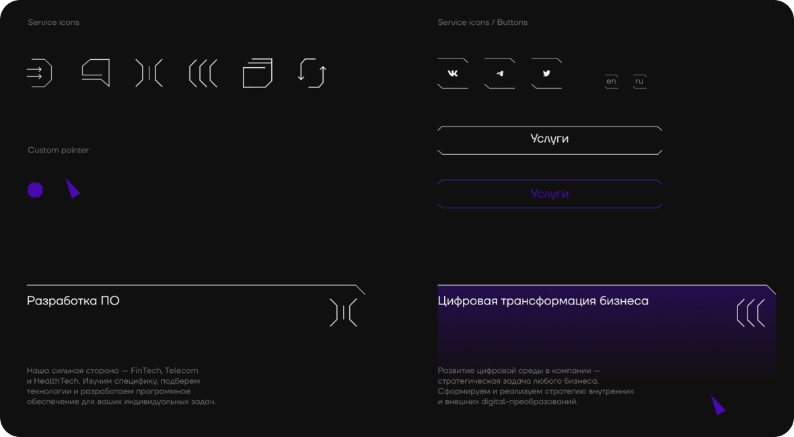
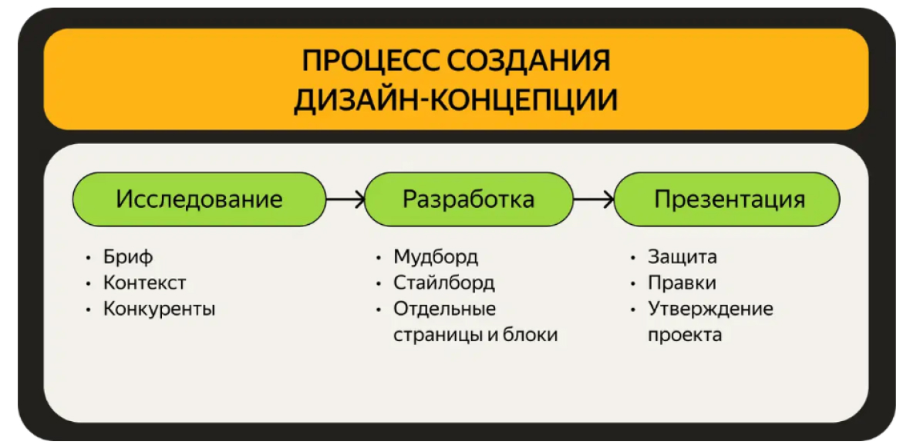
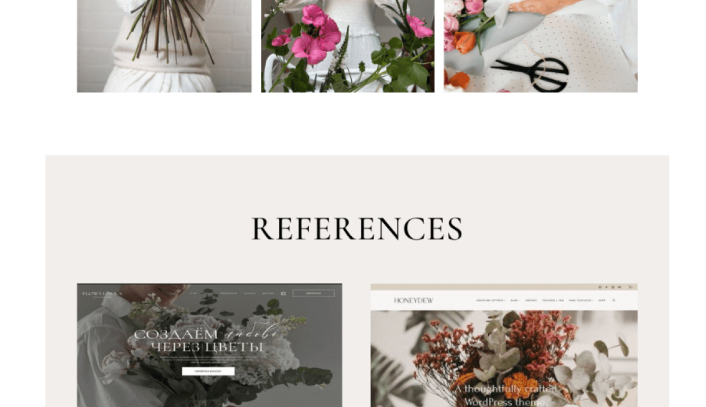

UX/UI дизайн
Дизайн-концепция
Дизайн-концепция ― это обобщённый образ будущего цифрового продукта, который передает его визуальные и стилистические особенности с учётом всех пожеланий и требований заказчика.
Дизайн-концепция помогает дизайнерам и разработчикам понять, каким должен быть конечный результат. Она задает направление, чтобы они могли работать согласованно и создавать именно то, что нужно пользователям.
Какие задачи выполняет дизайн-концепция?
1. Определяет главные идеи и ценности
Дизайн-концепция помогает сформулировать основные принципы и ценности, которые должен отражать дизайн продукта. Например, для приложения это может быть простота, функциональность и надежность.
2. Задает визуальный стиль
Концепция определяет, каким должен быть визуальный облик продукта ― его цвета, шрифты, иллюстрации. Это формирует целостный эстетический образ.
3. Обеспечивает единообразие
На основе дизайн-концепции создается согласованная система элементов интерфейса ― кнопок, иконок, меню и т.д. Это делает продукт узнаваемым и понятным для пользователей.
4. Задает взаимодействие с пользователем
Концепция определяет, как пользователи будут взаимодействовать с продуктом ― как будет устроена навигация, какие функции будут наиболее важными, какие анимации и микровзаимодействия будут использоваться.
5. Помогает команде работать согласованно
Дизайн-концепция служит ориентиром для всех, кто участвует в создании продукта ― дизайнеров, разработчиков, менеджеров. Это позволяет им действовать в одном направлении.

Фрагмент дизайн-концепции сервиса Интернет-магазин Stool Group: главная страница будущего сайта. Источник:only.digital
Дизайн-концепция включает, описывает и визуализирует:
1. Брендинг и ценности:
- Миссия, видение и ценности бренда
- Фирменный стиль (логотип, цвета, шрифты)
- Тональность и голос бренда
2. Целевая аудитория:
- Демографические характеристики пользователей
- Их потребности, боли и задачи
- Сценарии использования продукта
3. Визуальный дизайн:
- Цветовая палитра
- Типографика (шрифты, иерархия текста)
- Графические элементы (иконки, иллюстрации)
- Стилевые референсы и вдохновение
4. Интерактивный дизайн:
- Структура информации и навигация
- Ключевые экраны и сценарии взаимодействия
- Микровзаимодействия и анимации
5. Пользовательский опыт:
- Persona и модели поведения пользователей
- Ключевые задачи и "боли" пользователей
- Способы решения проблем и удовлетворения потребностей
Все эти элементы не просто описываются в дизайн-концепции, но и визуализируются с помощью макетов, скетчей, прототипов и других визуальных материалов. Это позволяет команде, заказчику и другим стейкхолдерам лучше представить себе конечный продукт еще на ранних этапах разработки.
Дизайн-концепция становится, по сути, наглядной "демо-версией" будущего продукта, объединяя в себе ключевые аспекты бренда, визуального оформления, взаимодействия и пользовательского опыта.

Пример дизайн-концепции компании-разработчика цифровых решений: прослеживается фирменный градиент, стилистика пиктограмм и акцидентный шрифт. Источник:nimax
Когда не нужна дизайн-концепция
1. Небольшие проекты с ограниченным бюджетом
Для небольших, простых проектов, таких как одностраничные сайты или небольшие мобильные приложения, полноценная дизайн-концепция может быть излишней. В таких случаях достаточно сразу перейти к созданию рабочих макетов и прототипов.
2. Внутренние корпоративные продукты
Если продукт ориентирован на внутренних сотрудников компании, а не на внешнюю аудиторию, дизайн-концепция может быть менее важна. Здесь основной акцент делается на функциональность, а не на брендинг и визуальную привлекательность.
3. Быстрые итерации и эксперименты
Если продукт находится на ранних экспериментальных этапах, когда идеи быстро меняются, дизайн-концепция может быть лишним промежуточным шагом. Лучше сразу переходить к созданию прототипов для тестирования с пользователями.
4. Продукты с ярко выраженным функционалом
Для некоторых технических продуктов, где основной акцент делается на функциональность, а не на визуальную привлекательность, детальная дизайн-концепция также может быть необязательной.
5. Обновление существующих продуктов
Если продукт уже существует и нужно лишь провести косметические изменения дизайна, дизайн-концепция может быть сведена к минимуму. В таких случаях можно сразу переходить к разработке макетов и прототипов.
В целом, дизайн-концепция более важна для новых, масштабных и визуально-ориентированных продуктов, где необходимо сформировать целостный бренд и визуальный образ. Но в некоторых ситуациях она может быть излишней, и можно двигаться быстрее, сразу переходя к созданию рабочих прототипов.
Процесс создания дизайн-концепции

1. Бриф:
- Сбор информации от заказчика: требования, пожелания, брендинг, цели и задачи проекта. Пример: "Хотим, чтобы сайт выглядел современно и вызывал доверие, отражая ценности нашего экологичного бренда".
- Аудит существующего цифрового продукта (если речь о редизайне): изучение архитектуры, стилистики, ключевых концептов для изменения. Пример аудита существующего сайта: "Текущая структура сложна и запутана, нужно упростить навигацию и выделить ключевые разделы".
- Анализ технических и экономических возможностей заказчика. Пример технических ограничений: "Сайт должен быть адаптивным и поддерживать загрузку больших изображений".
2. Исследование контекста:
- Анализ рынка и решений конкурентов, смежных компаний. Пример: "Конкуренты используют нейтральные цвета и минималистичный дизайн, мы можем выделиться более яркой палитрой".
- Изучение актуальных визуальных приемов и трендов в соответствующей сфере. Пример: "В последнее время популярны органические, природные формы в иллюстрациях, это подходит для экологичного бренда".
- Мониторинг тематических ресурсов: Awwwards, Webflow, Readymag, Telegram-каналы. Пример мониторинга ресурсов: "На Awwwards нашли несколько вдохновляющих примеров экодизайна, которые можно адаптировать под наш проект".
3. Мудборд:
- Подбор цветов, типографики, иллюстраций, других визуальных элементов.
- Создание мудборда, отражающего идею и видение проекта.
- Соответствие референсов пожеланиям заказчика и замыслу дизайнера.

Фрагмент мудборда для цветочной студиию Источник:Behance: Анастасия Хрулева
4. Проработка концепции:
- Выстраивание визуального стиля на основе собранной информации и референсов. Пример: на основе мудборда с природными мотивами и экологической тематикой создается цветовая палитра из зеленых, коричневых и голубых оттенков, подбирается органичная типографика.
- Разработка нескольких ключевых страниц (главная, каталог, карточка товара и т.д.). Пример: на главной странице - крупные фотографии природы, на странице каталога - плавные, обтекаемые блоки товаров, на карточке товара - детальные изображения, информация о материалах.
- Проработка базовых элементов: цветовая палитра, типографика, сетка, иллюстрации. Пример: иллюстрации с растительными орнаментами, крупные заголовки с поддержкой дополнительных текстовых блоков, сетка с динамичными, асимметричными колонками.
- Детализация на этом этапе не обязательна, важнее передать целостное представление.
- Если подготавливаются альтернативные концепции, они должны сильно различаться, чтобы дать больше выбора заказчику.
5. Презентация и согласование:
- Презентация дизайн-концепции заказчику и получение обратной связи. Пример: демонстрация нескольких альтернативных концепций с разной стилистикой и акцентами (например, "Минимализм", "Природный" и "Современный").
- Внесение правок и доработок по итогам согласования. Пример обратной связи заказчика: "Концепция "Природный" лучше всего передает наши экологические ценности, но хотелось бы сделать ее более современной и динамичной". Пример внесения правок: добавление более ярких акцентных цветов, упрощение некоторых иллюстраций, усиление динамики в сетке страниц.
- Утверждение финальной визуальной концепции. Пример: заказчик одобряет обновленный "Природный" вариант и дает добро на переход к прототипированию и детальному дизайну.
- Переход к следующему этапу разработки: проектирование пользовательских сценариев, создание прототипов, детализация макетов, реализация.
Итоги
дизайн-концепция ― это не готовое решение, а точка старта, в которой проектная группа начинает обсуждать проект, видя образ результата и корректируя его более предметно. После дизайн-концепции задача дизайнера ― собрать фидбек, возможности и ограничения, которые приземлят проект в плоскость реализации.
Примеры заданий для практики
Мозговой штурм идей
Проведи сессию мозгового штурма для генерации идей по решению конкретной проблемы, связанной с пользовательским интерфейсом или взаимодействием. Запиши все идеи и отнеси их к категории (успех, сложность, риск).
Эскизирование
Создай 5-10 быстрых эскизов для пользовательского интерфейса на бумаге или в цифровом виде. Не зацикливайся на деталях — сосредоточься на основных элементах интерфейса.
Концептуальные макеты
Выбери один из своих эскизов и создай высококачественный концептуальный макет в Figma или Sketch. Включи основные компоненты интерфейса и визуальные стили.